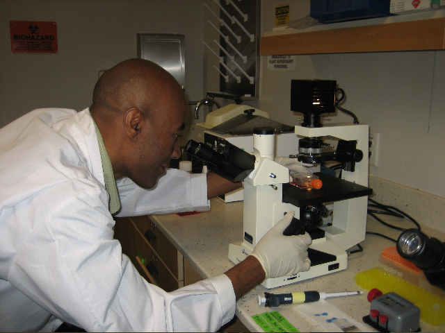

Visions & Goals
Proficiency in Stem Cell Biology

The primary goal of the San José State University Consortium for Stem Cell Internships in Laboratory-based Learning (SJSU SCILL) is to provide the State of California and the central coast region with well-educated scientists who are proficient in stem cell biology at the graduate level.
The second goal is to increase awareness about scientific and societal issues related to stem cell biology and regenerative medicine among non-science majors.
These two goals enable us to provide stem cell biology training and education to our culturally and ethnically diverse student population. Students are prepared for careers in stem cell biology and regenerative medicine through SJSU SCILL Program.